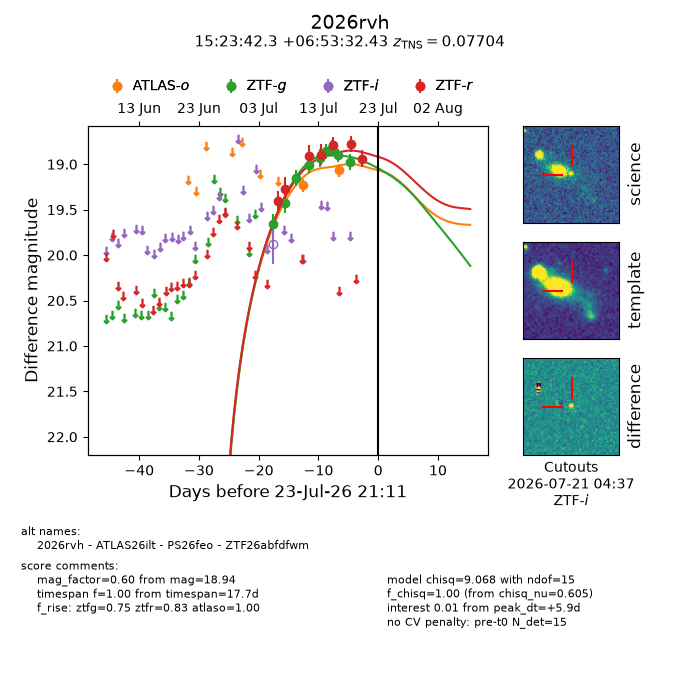
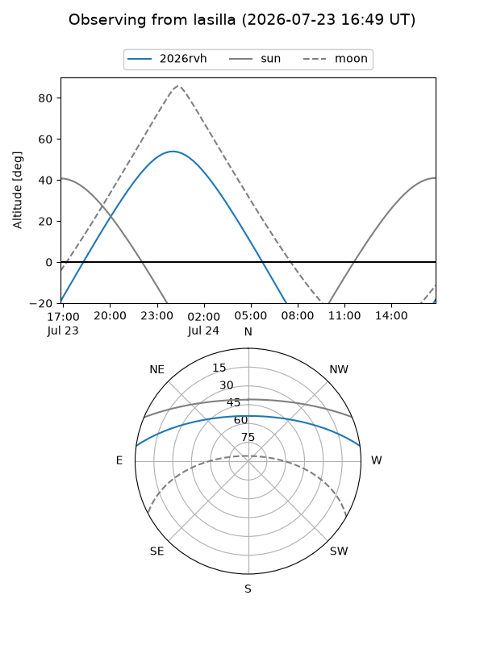
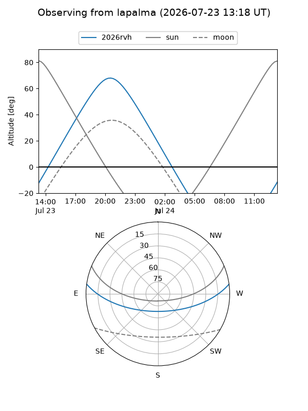
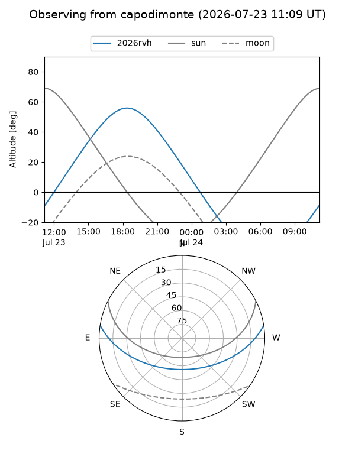
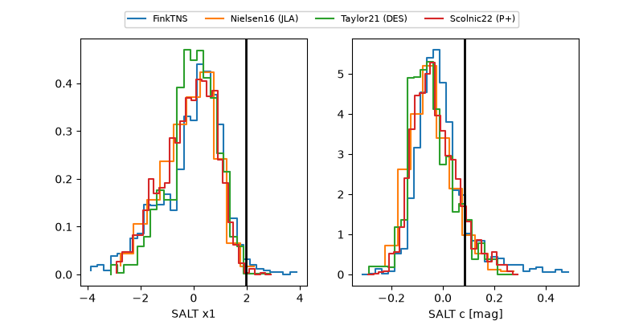

2026rvh
Target 2026rvh at 2026-07-23 21:14
Aliases and brokers:
FINK-ZTF: ztf.fink-portal.org/ZTF26abfdfwm
Lasair-ZTF: lasair-ztf.lsst.ac.uk/objects/ZTF26abfdfwm
ALeRCE-ZTF: alerce.online/object/ZTF26abfdfwm
YSE-PZ: ziggy.ucolick.org/yse/transient_detail/2026rvh
TNS name: wis-tns.org/object/2026rvh
Direct TNS query: direct search
alt names
ZTF26abfdfwm (ztf,fink_ztf)
2026rvh (tns,yse)
ATLAS26ilt (atlas)
PS26feo (panstarrs)
Coordinates:
equatorial (ra, dec) = 230.9262,+6.89234
equatorial (HMS+DMS) = 15:23:42.28,+06:53:32.43
galactic (l, b) = (10.7485,+48.61969)
Flags:
TNS type: SN Ia
TNS redshift: 0.0770
peak dt: +5.9
Photometry:
last atlaso=19.07, ztfg=18.98, ztfr=18.94
2 atlaso, 9 ztfg, 7 ztfr detections
Lightcurve

Visibility



Additional plots
